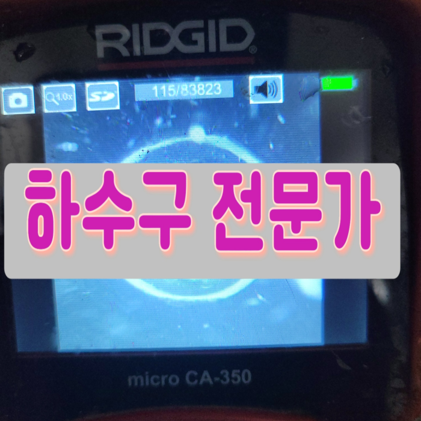
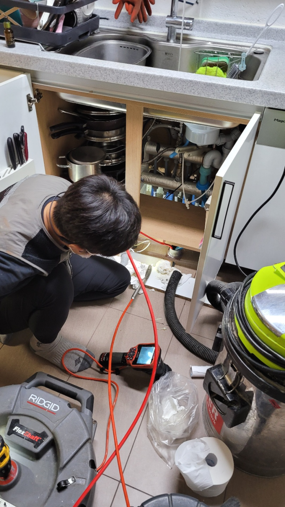
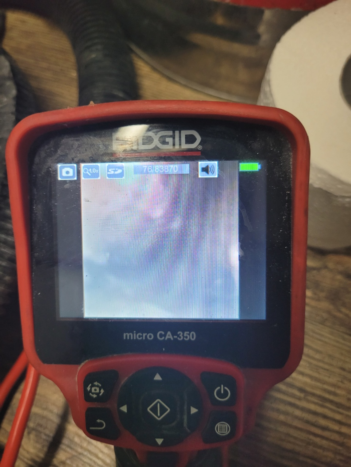
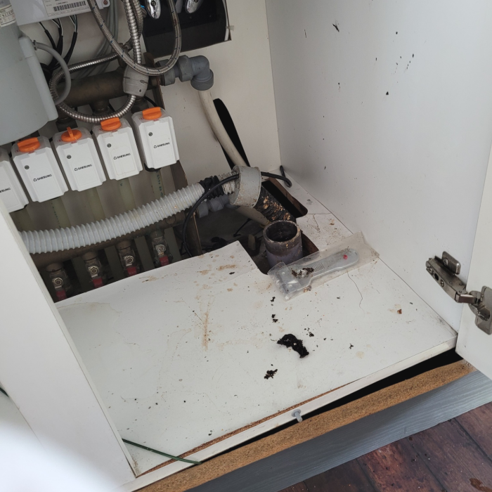
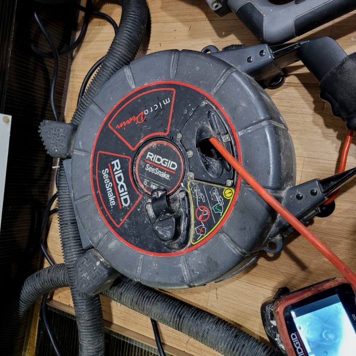
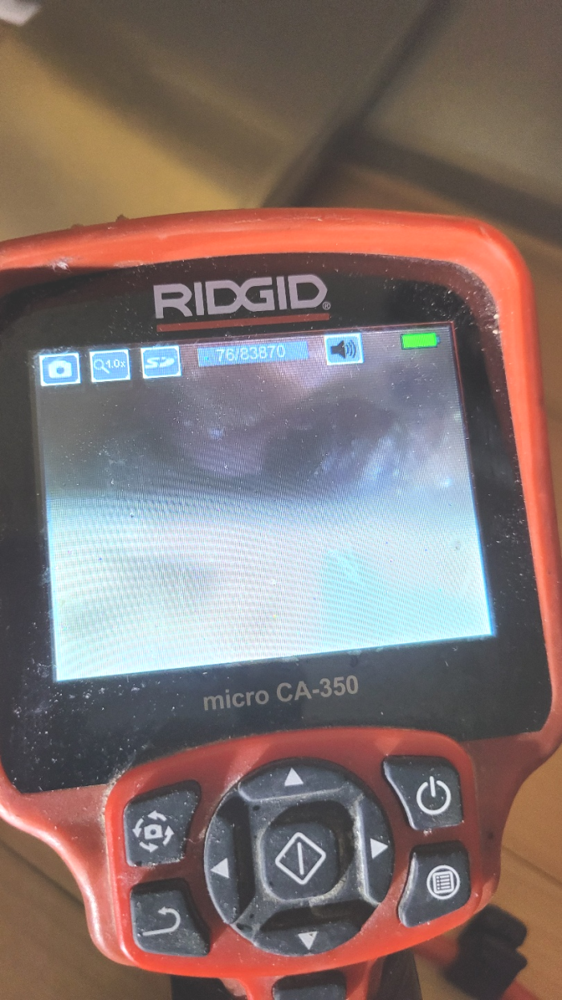
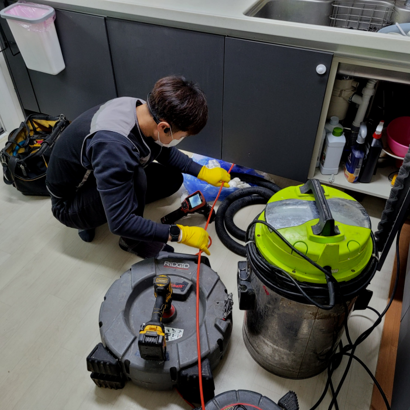

🏠 남양주시 별내동 싱크대배수관막힘 퇴계원 하수구뚫는업체 설비
양주 남양 싱크대막힘 전문 시공 후기

📋 작업 개요
- 위치: 양주 남양, 남양, 양주
- 서비스 유형: 싱크대막힘, 변기막힘, 하수구막힘, 배관막힘, 누수수리, 역류해결, 뚫는업체, 배관청소, 고압세척, 설비공사
- 작업 일시: 2024. 1. 17. 20:13
- 업체명: 하수구수사대 (010-5615-2118)
🔍 문제 상황
어서오세요
설비전문업체 "하수구수사대"를 찾아주셔서 감사드립니다.
배관속에 사용했던 들어오면 괜찮지만 물 뿐 아니라 오만 이물질이 함께 흘러 들어가기때문에 이것을을 제대로 처리해줘야 합니다. 관으로 들어가버린 다양한 종류의 갖은 잡다한 물질들이 외부로 배출되지 못하면 배출구막힘증상이 나타날수 있어요.
남양주시 별내동 싱크대배수관막힘 퇴계원 하수구뚫는업체 설비
하수관배관의 내부 상태를 확인하기 위해 내시경을 사용합니다. 이를 통해 하수관배관의 상태를 정확히 파악하고 적절한 대응을 합니다. 고압 세척과 플렉스 샤프트를 사용하여 변기 청소를 진행하며, 필요 없는 경우에는 아랫층 천장으로의 누수 문제를 방지합니다.

🔎 원인 분석
💡 전문가 진단: 남양주시 별내동 싱크대배수관막힘 퇴계원 하수구뚫는업체 설비
우리 눈에 하수관가 보이지않는다고 하여 심각하지 않게 생각하는것보단 평소 꾸준히 관리하시는게 좋습니다. 만약 뚫어야 될 상황이라면 하수관배관케어를 해줄수있는 업체를 결정후 상담받아보셔야 합니다.이곳 배관케어는 오래된 경력자들이 각 구역에 배치하여 배관 작업을 하기에 빠른 방문이 가능해요
배수관배관 내에는 많은 기름 덩어리들이 있을 수 있겠다는 예상을 하면서 내부의 상태를 자세하게 살펴보기로 하였는데요. 홀에서부터 주방까지 어떻게 배수관막힘이 발생하였는지 확인을 하기 위해서 저희는 내시경 카메라 작업을 하기로 하였습니다.
그러므로 반드시 전문 업체를 통해서 해결을 하시는 것이 필요하다고 할 수 있습니다. 그래서 퇴수막힘 현장에 도착을 하고 나서 배관의 상태를 보니 이미 고객님 댁에서는 퇴수의 역류로 인해서 큰 불편함을 입고 있었습니다.
그렇게 하다 보면 퇴수 막힘을 유발하게 될 뿐만 아니라 심한 경우에는 역류까지도 유발을 할 수 있는데요. 그러므로 뒤처리를 한 후에는 물티슈를 절대로 변기에 버리시면 안 되는 것입니다. 어떤 분들은 간혹 남은 음식물이나 다 쓴 기름을 변기에 버리시는 분들이 있는데요.
하수구가 막히는 원인은 다양한데요. 쓰레기나 휴지, 기름때, 그리고 여러 찌꺼기 등으로 퇴수가 막히게 돼요. 그러므로 사전에 이러한 부분들 주의해 주시는 게 좋을 것 같습니다.

🔧 작업 과정
그치만되도록이면 다시수리를 받는일이없게끔 하수관 완벽히 뚫고있어요.저희설비회사는 전국모든지역에 준비하고있어서 어떤상태든 한시간내에 의뢰자분이 살고있으신곳에 방문하고있습니다.전화주신날에도 출동이가능하기에 급하시다면 언제라도 찾아가고있습니다
실생활에서 유입되는 이물질이 퇴수구배관을 막기도 하지만 시멘트 가루들이 배관 깊은 곳에 흘러 들어오면서 배관을 막는 경우도 볼 수 있는데요. 시멘트의 성분은 물과 접촉하면서 단단하게 굳어지기 때문에 공사 이후 이러한 문제들이 많이 발생하기도 합니다.
뚫지못했다면 말씀드렸다시피 발생하는 금액은없습니다.서비스를 가장중요하게 경영하고있기에 저희배수구설비회사에만있는 전문지식으로 처리해드린답니다
살살쓰신다고해도 쭉사용하시다보면 깊은곳까지 쌓여서 퇴수구청소도구를 쓰시거나 매일조심스럽게 하는것이 번거롭다고 느끼실겁니다.밤늦게집에 도착하시면 생각조차 안나게돼요
뚫고 물이 빠져나간다고 작업 끝난 것이 아니며 꼭 배관배관 내시경 촬영으로 검사를 꼼꼼히 받아 보시는 것이 중요한데 보통 확인 작업을 빼고 마무리하시는 경우 남아있는 이물질들 제거가 확실히 끝나지 않고 다시 배관배관 역류 막힘이 일어날 수 있습니다.
퇴수 고장이 쉬운작업이 아니기에 작업시간이 길어지더라도 출중한실력의 기사에게 의뢰진행해보고싶다고 고려하시는분들도 상당하답니다. 실력부분이 신중한 요소겠지만 늦기전에 처리하지않는다면 모든손해는 여러분이 짊어지게되므로 가능한만큼빨리 달려가서 퇴수막힘을 뚫어드리는중입니다. 이후 강조드릴것은 실력이라고 생각합니다
배수막힘의 정도가 심할수록 석회의 크기도 크거나 단단한 정도가 심할 수 있습니다. 그래서 이를 제대로 제거해 줄 배수장비와 실력을 지닌 전문설비업체에 맡겨서 막힘을 뚫는 것이 가장 좋은 해결 방법이지요.
저희를 말씀드리자면 미리 정해놓지 않고 심하지 않다면 적더라도 그에 맞는 금액으로 오차가 없도록 안내해 드리고 있으며 음식을 파는 곳에서 문의를 하신다면 빠르게 내방하여 진단을 통해 정확한 견적을 내고 합의하에 작업을 진행하고 있습니다.


✅ 작업 완료
모든 현장에서 언제나 최선을 다하고 있으며 최대한 합리적으로 문제를 해결해 드리고 있으므로 도움이 필요하시다면 언제든지 편안하게 문의하여 주시길 바라겠습니다.
#하수구막힘 #하수구뚫음 #하수구역류 #씽크대막힘 #싱크대역류 #오수관막힘 #하수구청소 #욕실하수구막힘 #변기막힘 #하수구뚫는비용 #싱크대수리 #화장실막힘




⚠️ 베란다 누수 및 방수 관리 방법
- ✅ 비가 많이 올 때 창틀 주변이나 아래층 천장에 얼룩이 생기는지 정기적으로 확인해 보세요.
- ✅ 우수관 주변 실리콘 마감이 들뜨거나 깨진 틈새가 있는지 손상 여부를 수시로 체크하세요.
- ✅ 베란다 바닥 타일의 줄눈(메지)이 소실되면 그 틈으로 물이 침투하여 누수가 유발됩니다.
- ✅ 누수 의심 증상 발견 시 방치하면 아래층 손실이 커지므로 즉시 전문가의 진단을 받으십시오.
💡 핵심 정리
- 확실한 장비 작업(내시경 점검 및 샤프트 스케일링)으로 원인을 뿌리 뽑습니다.
- 작업 후 1년 이내에 동일한 부위 재발 시 100% 무상 A/S 서비스를 보장합니다.
- 서울 · 경기 · 인천 전 지역에 24시간 언제든 긴급 출동할 수 있도록 항시 대기 중입니다.
❓ 자주 묻는 질문 (FAQ)
🚨 양주 남양 싱크대막힘 문제로 고민이신가요?
정확한 원인 진단과 확실한 시공으로 재발 없는 해결을 약속드립니다.
24시간 긴급 출동 | 서울 · 경기 · 인천 전지역 | 1년 내 재발 시 무상 A/S